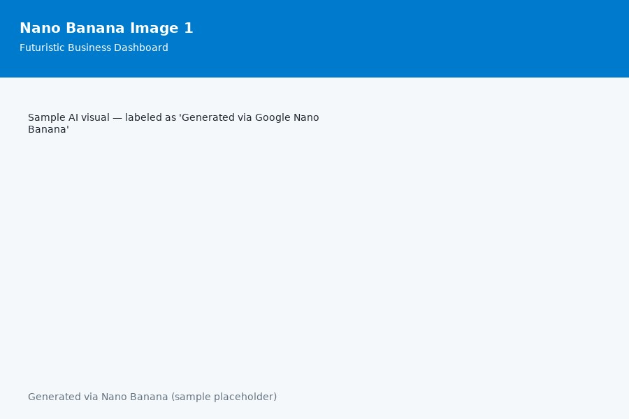
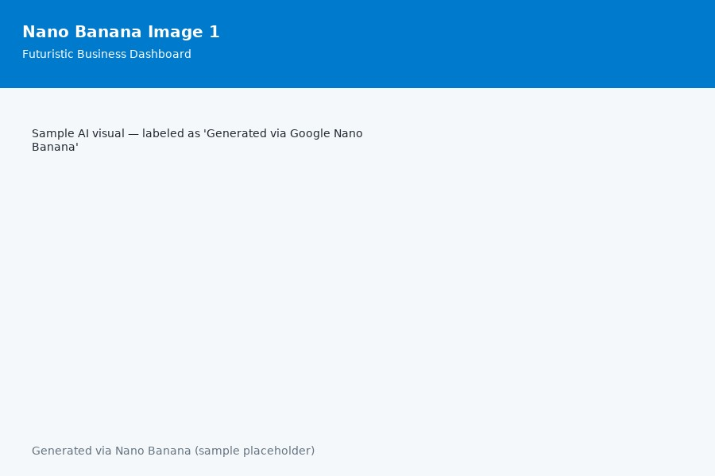

Exploring AI in Business Systems
Integrating Artificial Intelligence to enhance decision-making, streamline processes, and drive innovation in management information systems.
Integrating Artificial Intelligence to enhance decision-making, streamline processes, and drive innovation in management information systems.
